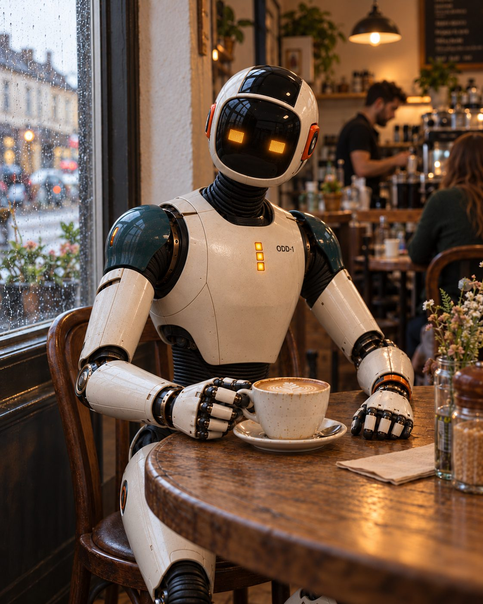
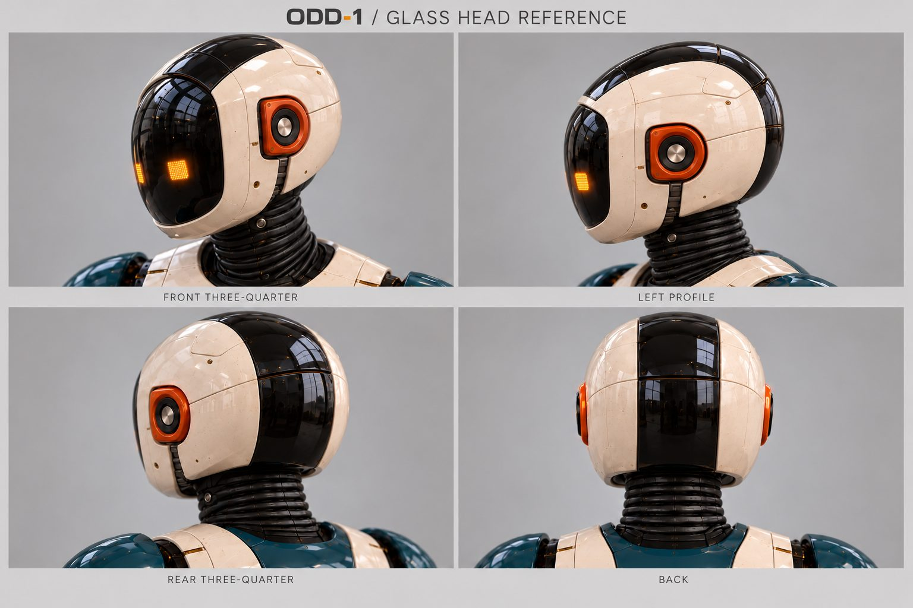
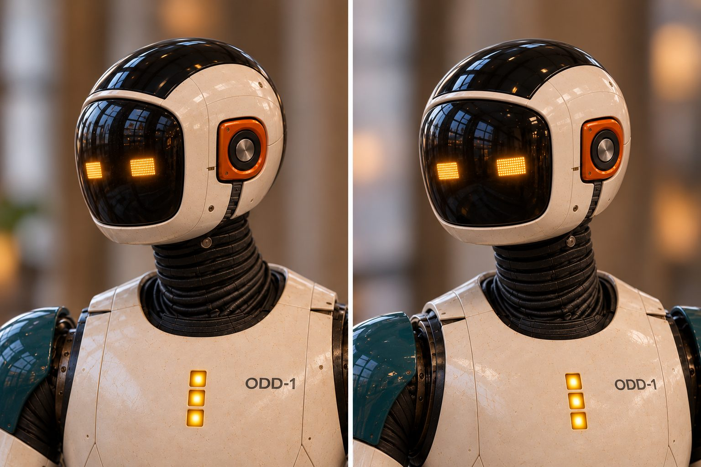
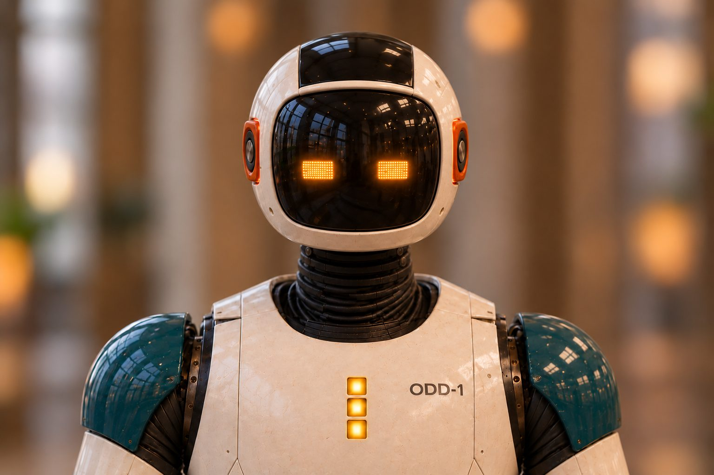
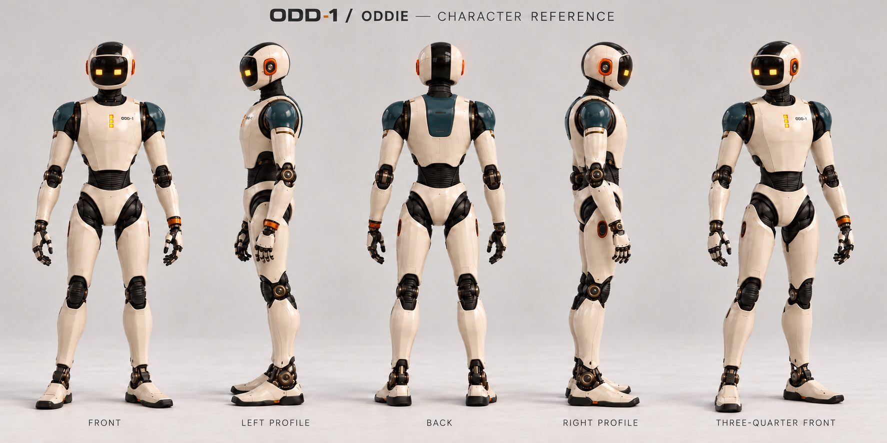
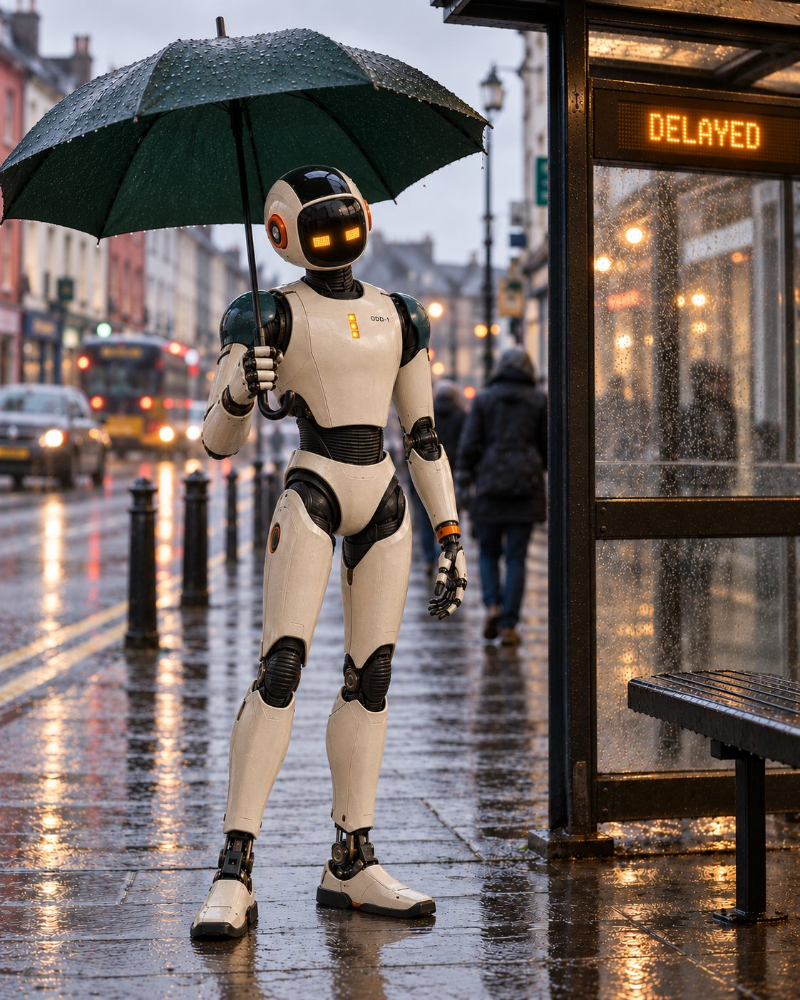

Castle Lager · AB InBev
AFCON “Backup Squad”
A through-the-line campaign that put the fans on the bench for the national team. Film, social and out-of-home, directed as one story.
Portfolio · Principal Creative Director, AI Video
Most AI video is impressive for three seconds and forgettable after that. I've spent twenty years directing film, motion and 3D for global brands. Now I build the method that makes generative work worth watching, and that a whole team can use.
Karl Rapp · Creative director, AI video & motion
Ex-Executive Creative Director, AB InBev / draftLine Africa · Cork, Ireland
For the Deel creative studio
You listed five things. Here's where each one lives on this page.
Featured AI project · independent · in development
A robot's guide to being human. A social series about everyday life, seen through a robot's eyes.
What does a robot order when he's only there for the company? A cappuccino, apparently.
Scene test, “Delayed”. Video developed from the approved character references.
I created ODD-1, or Oddie, as the lead character for a social series about everyday life seen through a robot's eyes. In one scene he sits beside a rain-streaked café window, one hand on his cup, his head tilted towards us.
He has two amber eyes and no mouth. That small tilt does most of the acting. I wanted someone scrolling past to pause because they recognised the gesture, even though they'd never met the character.

I used generative AI from the first design explorations through to the finished scene images. The most revealing test was turning Oddie's head. A front view could feel convincing, yet at three-quarter angle his proportions would drift and he'd look like a toy.
The fixes, checked from the front, side and back:



Those corrections became the production method. I built a character sheet, head and expression studies, and scene prompts for video development. Another creative can start with the approved references, choose what Oddie is paying attention to, and direct his performance without having to invent him again.


Oddie is an original fictional character, and I identify the imagery as AI-generated. I want the audience to know how he was made and still wonder what he'll do next.
Selected work · 2010 to now
Every frame starts as noise generated from a seed, then denoises into the real film still. Hover to run it again. Press play to watch here.
Castle Lager · AB InBev
A through-the-line campaign that put the fans on the bench for the national team. Film, social and out-of-home, directed as one story.
Castle Lager · AB InBev
Integrated campaign across broadcast, social and stadium.
AB InBev Africa · Operations
One animation pipeline, designed so every site got the same standard without me in the room. This is the method-builder piece.
Castle Lite · AB InBev
Designed and modelled the full concert dome: structure, stage and screen-animation layouts across three zones.
Carling Black Label · AB InBev
Brand case film for AB InBev's leadership conference. Turned round fast through many late changes.
AB InBev work was made as Executive Creative Director at draftLine Africa. The brands belong to their owners and are shown as portfolio work. Earlier clients include HP, Microsoft, Cisco, Dell, IBM, Lenovo, Intel and Vodacom.
In the lab · spec work for Deel
A 60-second film idea for Deel. One piece of work moves round the world with the sun, and the people who make it never meet. Below is the live animatic, built in code to lock timing and story before a single frame is generated.
Every piece ships with its production log and an AI-assisted label.
How I'd build Deel's AI video practice
The tools change every quarter. The method shouldn't. Each stage ends with a review gate, so anyone in the studio can pick up a project mid-way and know exactly where it stands.
Likeness · disclosure · provenance
No synthetic version of a real person without informed, written and revocable consent, scoped to the specific use. That includes our own colleagues.
If a viewer could mistake generated people or places for real ones, we label it. Platform rules and the EU AI Act's transparency duties are the floor, not the target.
Content Credentials on finished assets and a production log per project, so we can always show how something was made and who made the calls.
An example of the record I'd keep for each shot. Field names are illustrative.
What people say
Innovative and creative, thinking out of the box, and delivering in a cost-effective, high-quality way across a broad range of requirements.
A positive motivator who lets everyone take part in forming ideas. A strong team player who both leads and directs his people.
He stayed calm and professional during difficult times, and would dream up the most incredible designs and campaigns at the drop of a hat.
Experience
Technical visualisation, safety media and marketing content for an engineering manufacturer.
Led 16 designers, art directors, copywriters and animators across Castle Lager, Castle Lite, Corona, Carling Black Label and Stella Artois.
Built and ran the digital division. UN Global Compact, Standard Bank, Transnet.
B2B creative for HP, Microsoft, Cisco, Dell, IBM, Lenovo, Huawei and Intel.
Digital Marketing Services, Titan Productions, Sketch New Media. Before that, Boogertman & Krige Architects.
Let's talk
I'm in Cork and available for a conversation any time that suits your studio.
rapster.karl@gmail.com